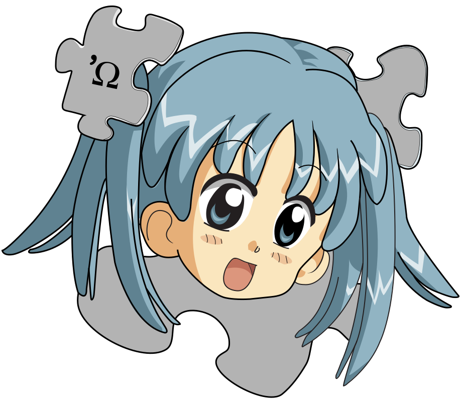
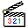
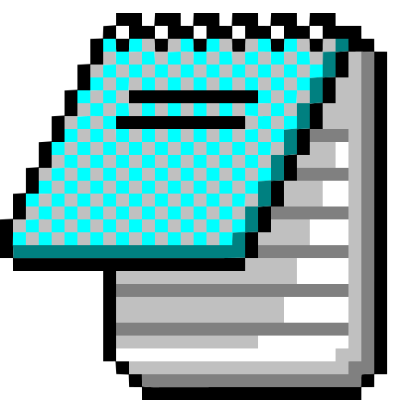
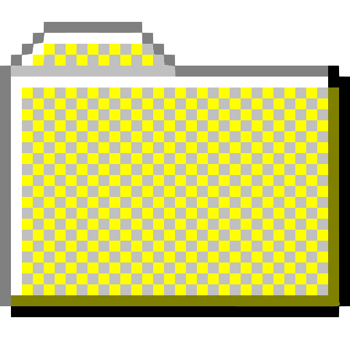
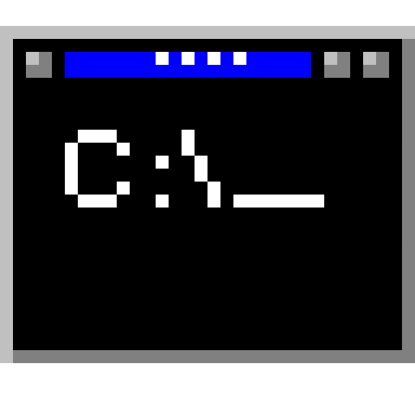
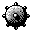

Award Modular BIOS v4.51PG, An Energy Star Ally
Copyright (C) 1984-98, Waifu Inc.
Main Processor : 486DX2-66
Video Adapter : ASCII Graphics Adapter
Memory Test:
0
Detecting Primary Master ... WAIFU-HD 20GB
Detecting Primary Slave ... None
Detecting Secondary Master ... CD-ROM Drive
Detecting Secondary Slave ... None

About Me

Media Player
My Projects

Patch Notes
WaifuOS
98 SE

Programs
▶
Patch Notes

Waifu-DOS Prompt
Calculator
Notepad
Waifu Viewer
WaifuPaint
Games
▶
MS-DOS GAMES
GTA Vice City

Minesweeper
3D Pinball
About Me
GitHub Repository
My GitHub
Media Player
My Projects
Display Properties
Restart System...
Start
vasco